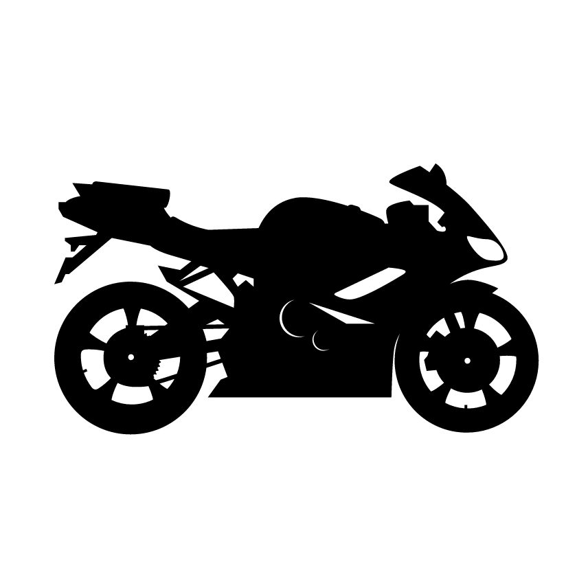
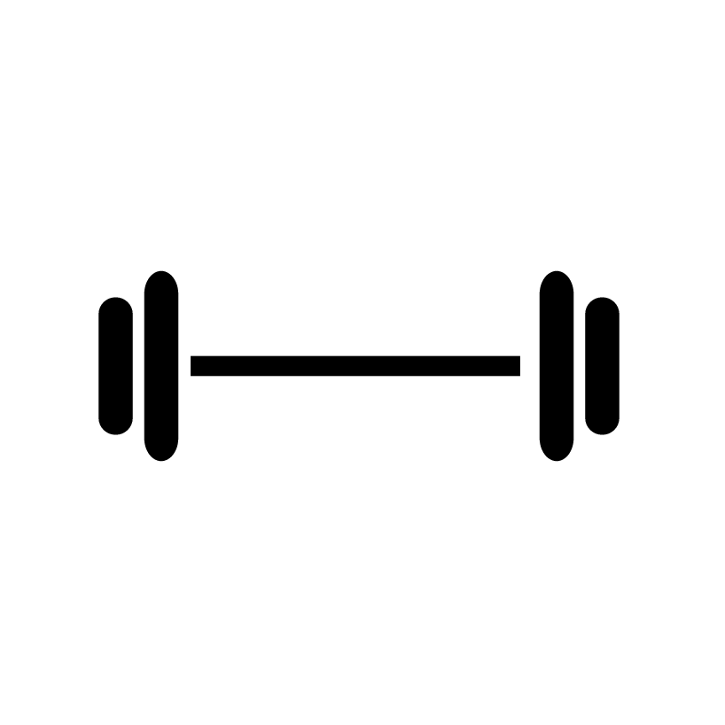
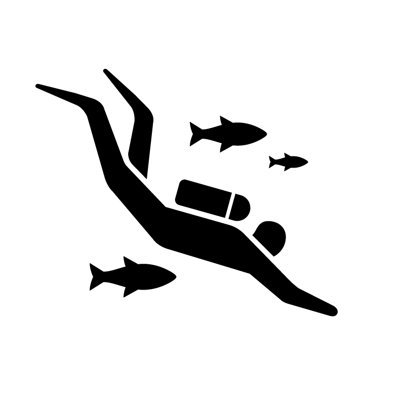

- Programming: C, Matlab, Git, Ruby, Javascript, jQuery, Python, UNIX, HTML5, CSS3/SASS, NoSQL, Adaptive/Collaborative Algorithms, Android, Latex, Mathematica
- Software: Excel, Photoshop, Illustrator, Premier, InDesign, Cambridge Engineering Selector, Solidworks
- Project Management: Agile, Burndown Charts, Progress Reports, Executive Visibility, QA, Asana, Trello, Mantis, JIRA
- Electrical: Nanosensors, Batteries and BMS, Signal Processing, I/O Logic for Real Time Monitoring, Silicon Wafer Production and Validation, SMPS, Stepper Motors, Arduino, Beaglebone
- Product Design: UX, Visual, User Stories, User Testing, Concept-to-Production (3 products)
Research Assistant | Waterloo Institute for Nanotechnology Engineering
May 2015 - April 2016
Worked in the lab of Dr. Chris Backhouse with lab on a chip sensors and medical diagnostics. Designed I/O systems for sensor control via Beaglebone interface with ADC and DAC.
Jr. IT Consultant | Erakovic Engineering
May 2015 - Aug 2015
Designed website, content management system, and managed IT for engineering consulting firm. Responsibilities included webserver and mailserver administration, QA and project updates.
Systems Engineering Intern | Intersoft
Sept 2013 - Dec 2013
Designer and developer on a new valet parking system for malls & businesses to be sold alongside the Intersoft Point-of-Sale system, system is being used in malls and hotels in Dubai and Abu Dhabi. Developed basic platform with accompanying business logic, in charge of project management and demos.
Research Assistant | Institute for Quantum Computing
Jan 2013 - April 2013
Conducted NMR spectrometer experiments which tested the formation of spin-spin coupled qubits. Tested and refined pulse-finding algorithm for the formation and manipulation of qubits. (report availible)
UX Designer/Project Manager | SAP
Sept 2012 - Dec 2012
Product design for three apps that were to be planned, developed tested and released. Created reports for executive visibility, co-ordinated daily scrum meetings, bug tracking and project demos.
Technical Operations Engineering Intern | Apotex
Jan 2012 - April 2012
Worked on capping problem which resulted in defective Azithromycin tablets. Created data standardization protocol for use by Technical Operations department.
Jr. Analyst | PH Quantum
May 2011 - August 2011
Tested for various chemicals such as PCBs, PAHs and VOCs to ensure samples met government standards. Compiled reports and processed invoices for clients on a daily basis.
Bachelor's of Applied Science | University of Waterloo
Major: Nanotechnology Engineering | Minor: Physics | Graduating April 2016
Notable Courses
- ECE457A: Collaborative and Adaptive Algorithms
- NE445: Photonics
- PHYS460A: Advanced Physics Laboratory
- PHYS395: Biophysics of Radiation
- PHYS380: Cellular and Molecular Biophysics
Formula Electric/Hybrid
August 2012 - Present
Worked on battery pack and battery management system (BMS) in the past. Currently working on motor controller for 2016 competition! Also overseeing team website.
Rapid Prototyping
First foray into the maker movement. Built a 3D printer rapid prototyper out of off-the-shelf components. (1st generation Prusa Mendel)
- 
- 

- 